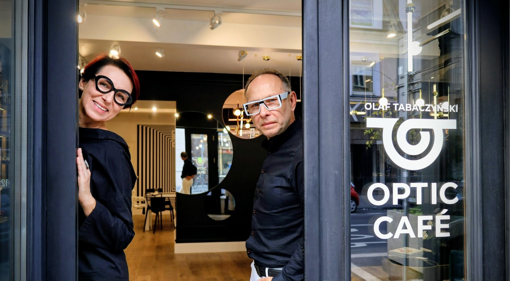

Optic Café to przestrzeń, w której kompleksowo zaopiekujemy się Twoim wzrokiem, w oparciu o zrozumienie indywidualnych potrzeb.
Zwracamy uwagę na stan wzroku oraz aspekty życia naszych pacjentów - sposób spędzania czasu, tryb życia i pracy, podejmowane aktywności, zainteresowania oraz osobiste preferencje.
Wiedza medyczna spotyka się u nas z pasją do stylu, dzięki czemu tworzymy okulary z unikatowym designem.
Uważne wsłuchanie się w potrzeby pozwala nam stworzyć spersonalizowane projekty doboru soczewek i opraw, łącząc komfort widzenia z indywidualnym stylem, czyniąc okulary elementem poprawy jakości codziennego życia.
Jesteśmy doświadczonymi kreatorami wizerunku. Znamy potrzeby współczesnego rynku oraz klientów. Znajdziesz u nas zrozumienie dla swoich indywidualnych potrzeb wzrokowych, stylistycznych i lifestylowych.
Stworzyliśmy profesję Stylista Opraw Okularowych, która na stałe wpłynęła na kształt branży optycznej. Od ponad 25 lat szkolimy i edukujemy innych specjalistów. Odnosimy sukcesy potwierdzone licznymi nagrodami, tytułami, dyplomami, certyfikatami i uprawnieniami. Działamy w Polsce oraz na świecie. Jesteśmy prelegentami na licznych konferencjach, kongresach, targach, piszemy regularnie do kilku magazynów optycznych.
Umiejętności i kompetencje w zakresie stylizacji, szeroko rozumianego kreowania wizerunku oraz opieki nad wzrokiem to nasze know how.

Gościom salonu optycznego Optic Café oferujemy komfortową przestrzeń do podejmowania świadomych wyborów w oparciu o naszą wiedzę, uważność i partnerskie podejście, w atmosferze szacunku i zrozumienia.
Zapraszamy pacjentów w każdym wieku: od najmłodszych, przez młodzież, po osoby dorosłe i seniorów.
Nasz salon jest pet friendly więc możesz przyjść również ze swoim pupilem.
Z przyjemnością porozmawiamy o potrzebach Twojego wzroku przy aromatycznej włoskiej kawie. Zapraszamy do Optic Café.
Sprawdź nasze rozwiązania dla pełni opieki nad Twoim wzrokiem.